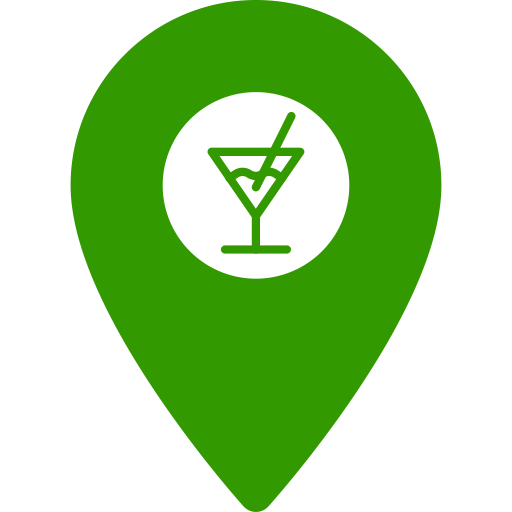

En suisse, les cinémas et les bars ont pu réouvrir leurs portes le 19 avril 2021 suite aux assouplissement des mesures sanitaires. Nous vous proposons de découvir les cinémas et les bars autour de vous pour que vous puissiez vous divertir !
Erreur